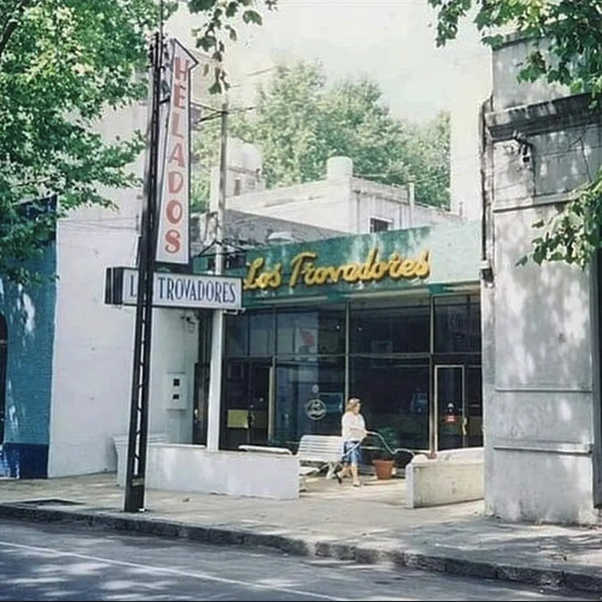
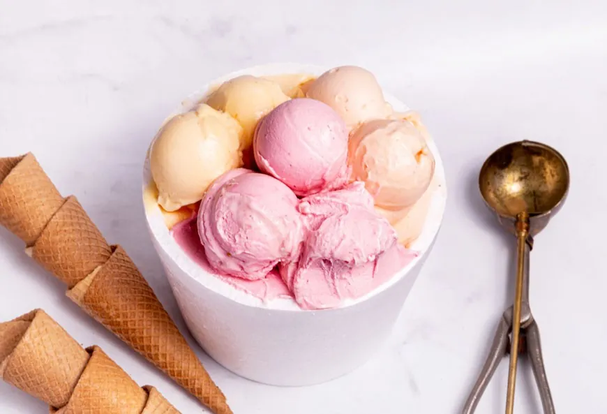
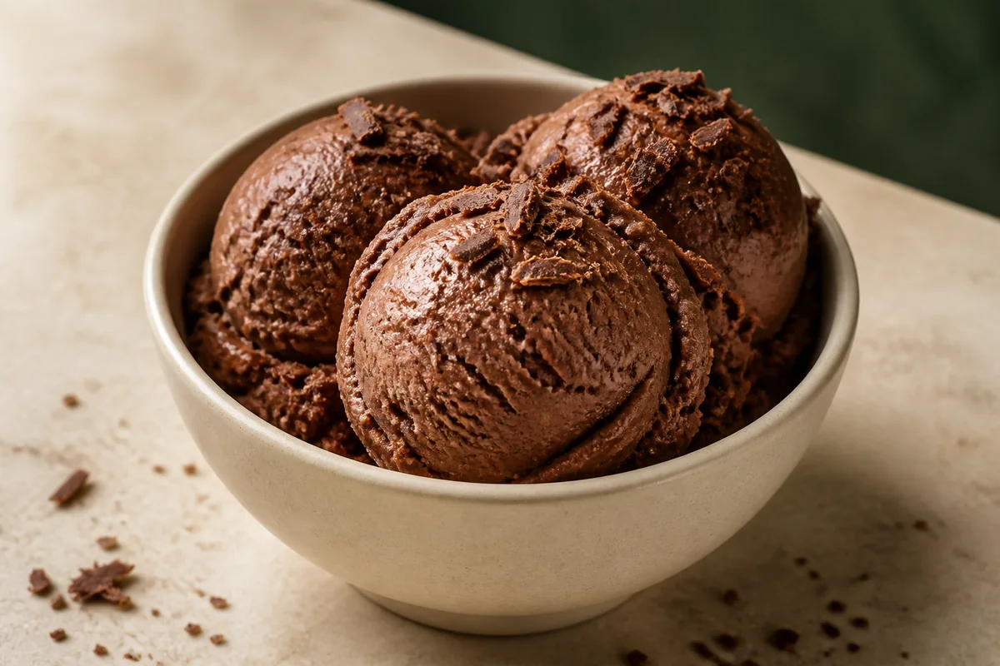
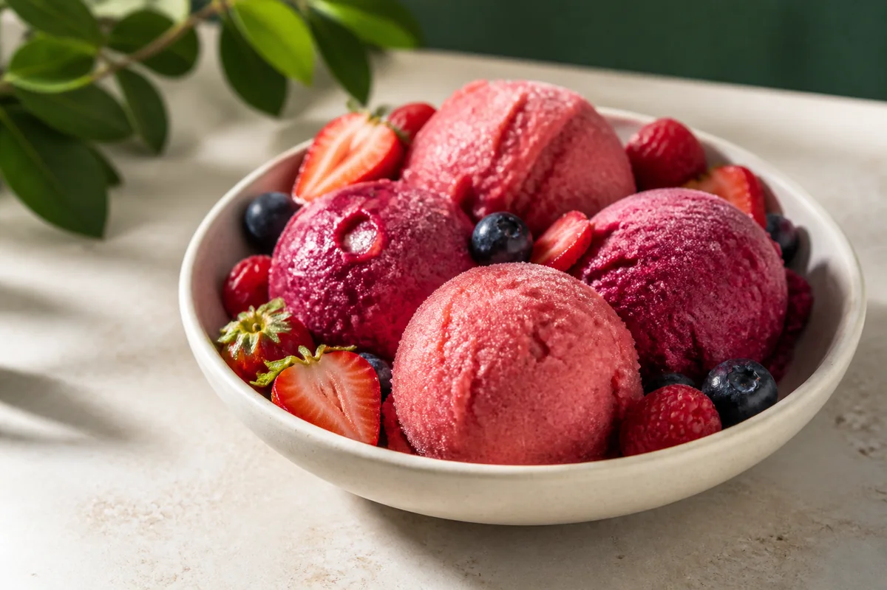
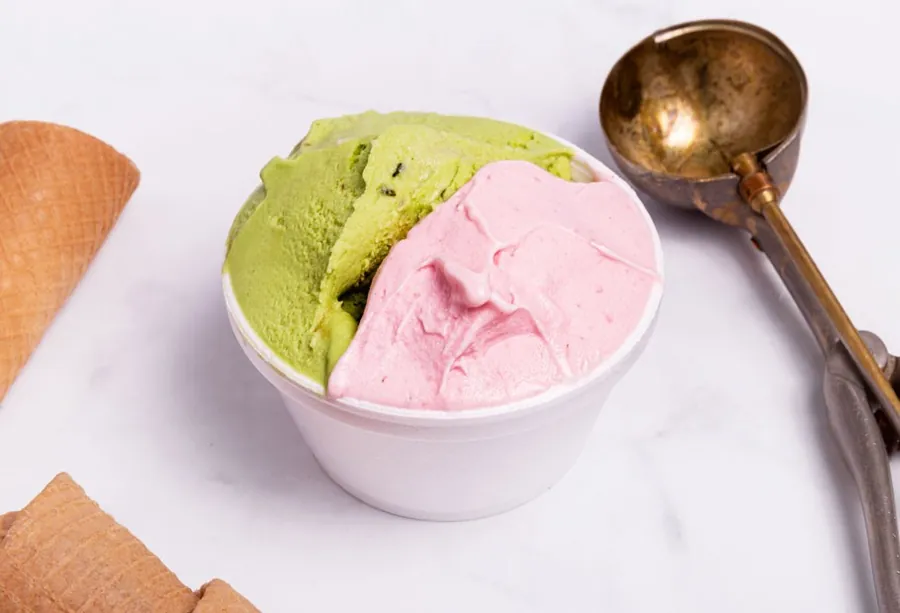
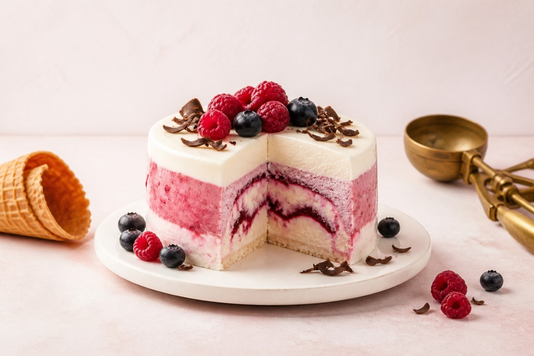

★★★★★
“La mejor heladería que probé en mi vida. El dulce de leche es cremoso, intenso y artesanal de verdad.”

Valentina R.
Todos los días, en la esquina más helada de Pocitos

Desde 1934, Los Trovadores endulza los momentos de miles de familias uruguayas con helado artesanal elaborado con pasión y los mejores ingredientes.
Un clásico de siempre o una creación nueva: cada visita es una invitación a crear recuerdos. Tradición, calidad y el gusto de compartir, en cada helado.
Descubrí nuestra línea de sabores clásicos, sin azúcar, sin gluten, sin lactosa y postres ideales para compartir en familia y con amigos.
Dulce de leche, chocolate, crema del cielo y mucho más.

La cremosidad de siempre, también sin gluten y sin lactosa.

Chocolate, dulce de leche y frutilla en opciones aptas para celíacos.

Opciones frescas a base de fruta, livianas y llenas de sabor.

Tortas, cassattas y bombones para celebrar cualquier ocasión.

Tortas, cassattas y bocados helados para disfrutar sin azúcar.
Las reseñas, el puntaje y el total se sincronizan diariamente con Google.
“La mejor heladería que probé en mi vida. El dulce de leche es cremoso, intenso y artesanal de verdad.”
“Un clásico de Pocitos desde 1934. La atención es cálida y el pistacho, espectacular.”

“Hay una gran variedad de sabores sin azúcar y todos son riquísimos. Una propuesta difícil de encontrar.”

“Contratamos el servicio para un cumpleaños y fue el éxito de la fiesta. Puntuales y con el helado impecable.”

“Fuimos en familia y cada uno encontró su sabor. La frutilla y el chocolate fueron nuestros favoritos.”

“Excelente atención y muy buena calidad. Se nota la tradición en cada gusto; siempre volvemos.”